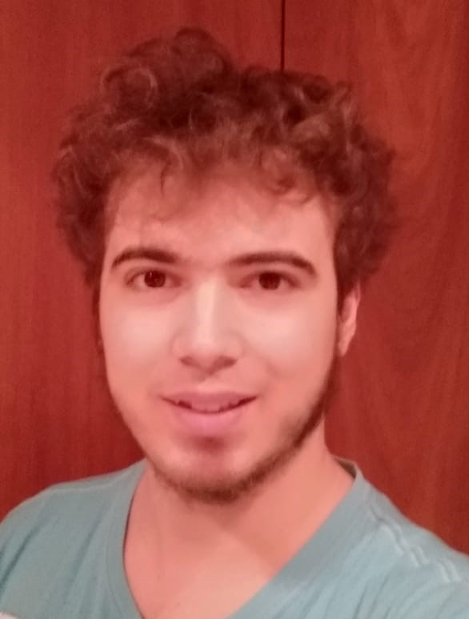

ADRIÀ MIR FELIU

Personal Data
- Age: 24
- Phone: 626 697 297
- Email: adriamir@gmail.com
Education
- Bachelor of Design and Production of Videogames at Tecnocampus, Pompeu Fabra University.
- Highschool at J. Vicens Vives from Girona.
Languages
- Catalan – Native
- Spanish – Native
- English – Fluent, B2 (First Certificate in English)
- Japanese – Studied one year at Nipponia academy
Licenses
- Driving license – B class (with car available)
Summary
I am a videogame graduate who loves programming and aspires to become part of a team in a videogame company. Unity is my specialty, but I have programmed with Unreal Engine 4 blueprints.
Knowledge
- Main Software: Unity, Unreal Engine 4, and Visual Studio.
- Other Software: Git, Illustrator, Photoshop, 3Ds Max, Mudbox, RStudio, Open Toonz, Pro Tools, Code::Blocks, Word, Excel, and Powerpoint.
- Programming Languages: C#, C++, SQL, Lua and R.
Skill Highlights
- Adaptative: I am willing to adapt to new teams, software, programming languages, etc.
- Team worker: I enjoy working with other people. I have worked in a lot of group projects
- Passionate: I am very excited to work on anything related to videogames or programming.
- Time management: I can effectively prioritize and schedule tasks to achieve deadlines.
- Proactive: I am willing to undertake other tasks when necessary to assist my co-workers.
Experience
- Logisfashion, S.A. - 8/6/2017 to 24/7/2017
I have worked on a clothing warehouse doing several tasks like removing the alarms of the clothing, or order it on the correct place. - Cableados y Montajes Banyoles, S.L. – 31/7/2017 to 11/8/2017
I have worked on assembling pieces of water pumps on a water pump factory. I integrated very well with co-workers. I was always friendly and professional.
Projects
View and download: itch.io